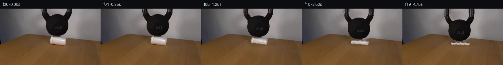
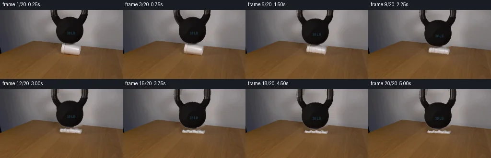
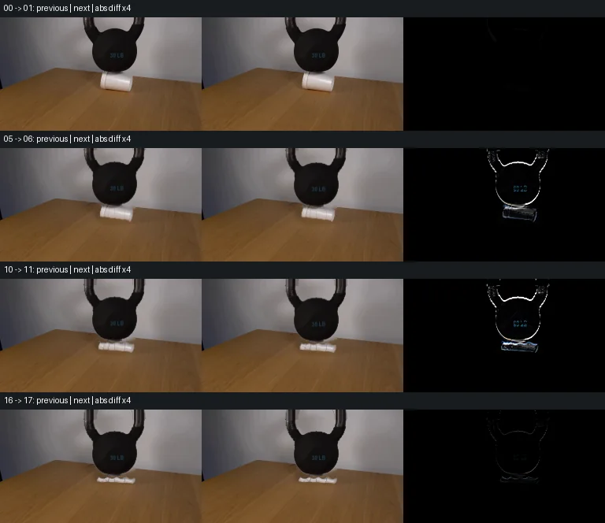

V0 · 初版 · 最终提交
![]()
Observable Generation Trace
把最终像素视频、Harness 冻结的每轮候选、真实工具事件和 Agent 自述放在同一页。可观测证据与模型自述分开标记，避免把“模型说它检查过”误当成真实工具调用。
![首帧]()
Static locked-off single-shot with fixed frame throughout filmed with constant framerate in real-time. The scene shows a realistic scientific demonstration. The scene only contains the described setup and actions. The white styrofoam cup is on a wooden table. The 30lb kettlebell is placed on top of the white styrofoam cup.
首帧显示在左侧播放器初始画面。Track 权限、隔离和 tensor 一致性来自 run manifest，而不是 METHOD.md。
默认勾选初版和最终版；可选其他版本一起同步播放。仅检查图更新的连续重复快照已合并，回退旧视频仍保留为一次修订。
Observable events
来源：events.jsonl + run manifest
视觉工具可用，但 events.jsonl 没有记录到成功的输出 PNG 读取；存在 self-refine 候选，不等于存在可验证的视觉 self-refine。
Frozen candidates
每张图来自该 round 的真实 00 / 01 / 05 / 10 / 19 帧

pixels b7179441dd1d546c · code 8d9e2cc0daa2cd05
--- previous/generate.py +++ current/generate.py @@ -0,0 +1,256 @@ +#!/usr/bin/env python3 +"""Generate the 20-frame PixelWorld continuation using only local pixels/math.""" + +from pathlib import Path + +import cv2 +import numpy as np +from PIL import Image, ImageDraw + +import artifact_io + + +ROOT = Path(__file__).resolve().parent +W, H = 256, 144 + + +def smoothstep(x): + x = np.clip(x, 0.0, 1.0) + return x * x * (3.0 - 2.0 * x) + + +def over(base, layer, alpha): + """Straight-alpha RGB-over compositing in float space.""" + a = np.clip(alpha[..., None], 0.0, 1.0) + return base * (1.0 - a) + layer * a + + +def translate_rgba(rgb, alpha, matrix, size=(W, H)): + layer = cv2.warpAffine( + rgb.astype(np.float32), matrix, size, + flags=cv2.INTER_LINEAR, borderMode=cv2.BORDER_CONSTANT, borderValue=0, + ) + a = cv2.warpAffine( + alpha.astype(np.float32), matrix, size, + flags=cv2.INTER_LINEAR, borderMode=cv2.BORDER_CONSTANT, borderValue=0, + ) + return layer, np.clip(a, 0.0, 1.0) + + +def make_assets(src): + yy, xx = np.mgrid[0:H, 0:W] + lum = src.astype(np.float32).mean(axis=2) + + # The bell silhouette is a round body plus the visible portions of an + # elliptical handle. A luminance gate follows the real anti-aliased edge + # and prevents wall/cup pixels inside the geometric envelope from moving. + body = ((xx - 145.0) / 30.5) ** 2 + ((yy - 43.5) / 29.5) ** 2 <= 1.0 + outer = ((xx - 145.0) / 39.0) ** 2 + ((yy + 1.0) / 39.0) ** 2 <= 1.0 + inner = ((xx - 145.0) / 24.0) ** 2 + ((yy + 1.0) / 27.0) ** 2 < 1.0 + handle = outer & ~inner & (yy <= 38) + bell_binary = ((body | handle) & (lum < 96)).astype(np.uint8) + bell_binary = cv2.morphologyEx( + bell_binary, cv2.MORPH_CLOSE, np.ones((3, 3), np.uint8) + ) + # Keep only components connected to the main object. + n, labels, stats, _ = cv2.connectedComponentsWithStats(bell_binary, 8) + keep = np.zeros_like(bell_binary) + for idx in range(1, n): + if stats[idx, cv2.CC_STAT_AREA] > 16: + keep[labels == idx] = 1 + bell_alpha = cv2.GaussianBlur(keep.astype(np.float32), (3, 3), 0.55) + bell_alpha = np.clip(bell_alpha, 0.0, 1.0) + + # Cup selection: a measured polygon plus a neutral, bright material test + # separates warm-white foam from the wood and from the black bell. + cup_region = np.zeros((H, W), np.uint8) + contour = np.array( + [[130, 66], [157, 70], [168, 75], [166, 92], + [159, 95], [132, 92], [125, 85], [126, 74]], np.int32 + ) + cv2.fillPoly(cup_region, [contour], 1) + rgbf = src.astype(np.int16) + neutral = (rgbf[..., 0] - rgbf[..., 2] < 34) & (lum > 87) + cup_binary = (cup_region.astype(bool) & neutral & (bell_alpha < 0.20)).astype(np.uint8) + cup_binary = cv2.morphologyEx( + cup_binary, cv2.MORPH_CLOSE, np.ones((3, 3), np.uint8) + ) + cup_alpha = cv2.GaussianBlur(cup_binary.astype(np.float32), (3, 3), 0.65) + cup_alpha = np.clip(cup_alpha, 0.0, 1.0) + + # Extend the handle above the original crop. The first source row supplies + # its true material; analytic ring geometry supplies only the unseen mask. + ext = 18 + bell_rgb_ext = np.zeros((H + ext, W, 3), np.float32) + bell_a_ext = np.zeros((H + ext, W), np.float32) + bell_rgb_ext[ext:] = src.astype(np.float32) + bell_a_ext[ext:] = bell_alpha … diff truncated; 169 more lines …
Final visual checks
Harness 保存的最终产物


Agent claims
以下文字由生成 Agent 撰写，不等同于工具证据
(0, 91) through (79, 64) to (255, 69).x=145. Its handle is clipped by the top edge, its round body spans approximately x=116..174, y=16..71, and the lowest contact area is around y=69..72. The small blue-gray 30 LB marking must move with the bell.x=126..168, y=68..94. Its left rim is near x=128..136, and its tapered body points right. It casts a compact shadow on the wood.| Frame | Time shown | Planned state |
|---|---|---|
| 00 | 0.25 s | Exact source image, unchanged. |
| 01 | 0.50 s | First subtle dent under the bell; essentially no bell drop yet. |
| 02 | 0.75 s | Cup side creases and loses a little height; bell begins a subpixel/1 px descent. |
| 03 | 1.00 s | Left rim starts folding inward; right wall bows outward. |
| 04 | 1.25 s | Visible buckle; bell has descended about 2 px. |
| 05 | 1.50 s | Cup height decreases further and its lower edge spreads slightly. |
| 06 | 1.75 s | Main crease deepens; the right end wrinkles. |
| 07 | 2.00 s | Progressive collapse; bell down about 4 px. |
| 08 | 2.25 s | Upper cup wall folds toward the tabletop; footprint broadens. |
| 09 | 2.50 s | Mid-collapse, with asymmetric crushed folds and stronger contact shadow. |
| 10 | 2.75 s | Bell down about 7 px; cup is less than half its starting support height. |
| 11 | 3.00 s | Rim and sidewall overlap into a wrinkled white mass. |
| 12 | 3.25 s | Rapid final buckle; bell approaches tabletop. |
| 13 | 3.50 s | Cup becomes a low flattened slab, spread left and right. |
| 14 | 3.75 s | Bell drops the last few pixels and nearly settles. |
| 15 | 4.00 s | Primary impact/settling complete; compressed foam remains visible. |
| 16 | 4.25 s | Tiny settling creep; shadow stabilizes. |
| 17 | 4.50 s | Essentially static final state. |
| 18 | 4.75 s | Static hold on crushed cup and resting bell. |
| 19 | 5.00 s | Final static hold; no camera or scene change. |
first_frame.png after RGB decoding.30 LB lettering and highlights remain attached to it.This continuation is generated deterministically from first_frame.png with local Python pixel operations only. It does not use a renderer, external image source, model, mask, or network service.
30 LB label and highlights, are kept rigid. An analytic continuation of the two handle bands supplies the few source rows that were originally above the crop, so lowering the bell does not create a flat cut edge.artifact_io.save writes the PNG sequence, packed uint32 0xRRGGBB tensor, inspection sheet, and standalone player. The script separately writes an adjacent-frame transition sheet and then reloads every PNG and the NPZ to verify exact agreement. Frame 00 is an exact RGB copy of the supplied first frame.